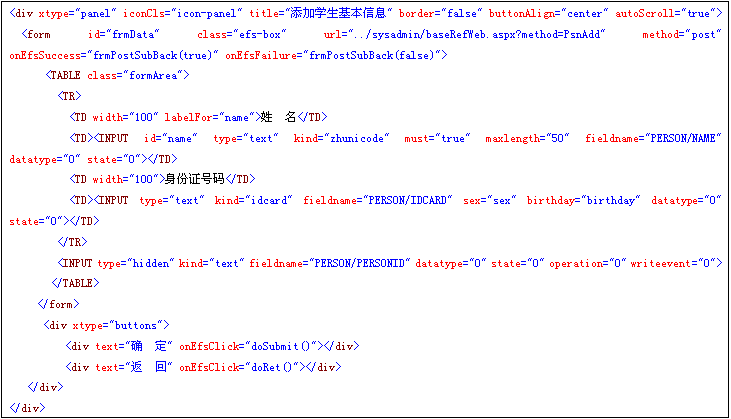
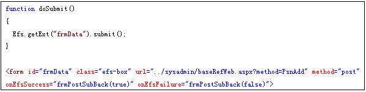
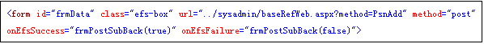

添加、修改、删除操作流程分析
构造添加的实例代码：

特别说明：
1、form中的url指异步提交的后台指向地址；
2、form中的onEfsSuccess 对应函数是表示异步提交成功后，返回执行的函数；
3、form中的onEfsFailure对应函数是表示异步提交失败后，返回执行的函数；
4、inpput中kind属性表示了数据输入类型，对应说明请参考《扩展INPUT标签属性说明》；
5、input中的fieldname属性对应了需要拼写的xml文档对应路径；
6、input中的state，datatype属性说明，请参考《扩展INPUT标签属性说明》；
input中operation属性很重要，在标准xml结构中，“0”表示了添加，“1”表示修改，“2”表示删除操作，删除和修改操作时，请注意将关键字段的state属性设置为“5”，则表示where条件。
确定提交后执行doSubmit()方法如下：

备注说明：
1、frmData 为前面构造的form对象的id名；
2、Efs.getExt("frmData").submit()方法分解说明：
3、第一步实现了数据表单的验证，根据所有Input的kind属性，自动完成数据校验，如果校验失败，则执行onEfsFailure函数返回；
4、第二步，根据Input表单的fieldname属性，自动完成标准xml结构的拼写，标准的数据交换结构，请参考《EfsFrame框架标准数据交换XML结构说明》；
5、第三不，将拼写完成的xml存放在表单域下面的<input type=”hidden” name=”txtXML”>里面，如果txtXML的隐藏表单域不存在，则自动添加一个该隐藏域；
6、如果form的action不为空，则以同步方式提交form表单；
7、如果form的url不为空，则以异步的方式提交form表单；
8、异步方式提交后，如果提交成功，执行onEfsSuccess对应函数，如果提交失败，执行onEfsFailure对应函数；
Form表单域中的提交后台执行分解说明：

1、url指向了统一的公共处理的页面，后面的method表示调用的方法，在baseRefWeb.cs中，采用发射的方式，执行到Efsframe.cn.baseCls.baseRef类中的 PsnAdd 方法；
2、PsnAdd方法则调用实际的业务操作组件即可；
组件业务代码实现说明：
1、如果是已经构造好的xml结构文档，则只需要调用Operation类中的dealWithXml方法即可；
2、如需要特殊处理，如给关键字段分配唯一编码，则需要单独写类方法来实现以下，具体方式，见实例文档中的“添加人员”组件方法，同时也可以参考角色管理里面的相关组件方法；
总结一下业务开发步骤：
1、完成表结构设计；
2、根据表结构设计，完成表现层form表单域的各种属性配置，特别注意 kind，datatype，fieldname属性；
3、根据业务操作类型，定义operation属性，该属性只组要在同一个表中的字段上定义一次即可，不同的表则需定义多次；
4、当操作类型为修改、删除时，修改operation属性的同时，需将作为Where条件的主关键字指定对应的state为“5”；
5、根据标准的组件方法，写一个类和方法来完成对应的业务操作；
6、在类baseRefWeb.cs中写一个对应的方法去调用业务组件方法，便于页面统一调用，这时候页面只需要关心方法名即可，不用关心具体的业务组件的实现；
7、将baseRefWeb.cs中对应的业务组件执行的方法写在form表单的url的method后面即可。
8、由于我们采用的是标准的xml作为数据交换的接口，所有的业务类方法的实现都只需要一个参数即可，所以我们能很轻易的通过反射机制实现业务组件接口的调用，至于组件接口中如何分析和处理这些xml结构到数据库中，页面开发人员就不用很关心，节省了页面开发人员的大量时间。